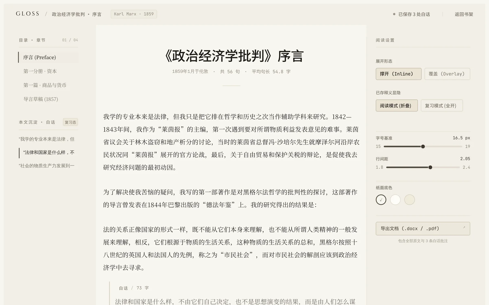
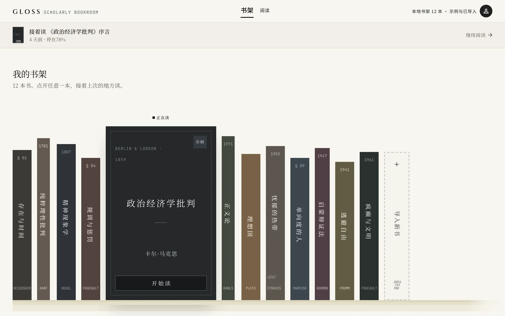
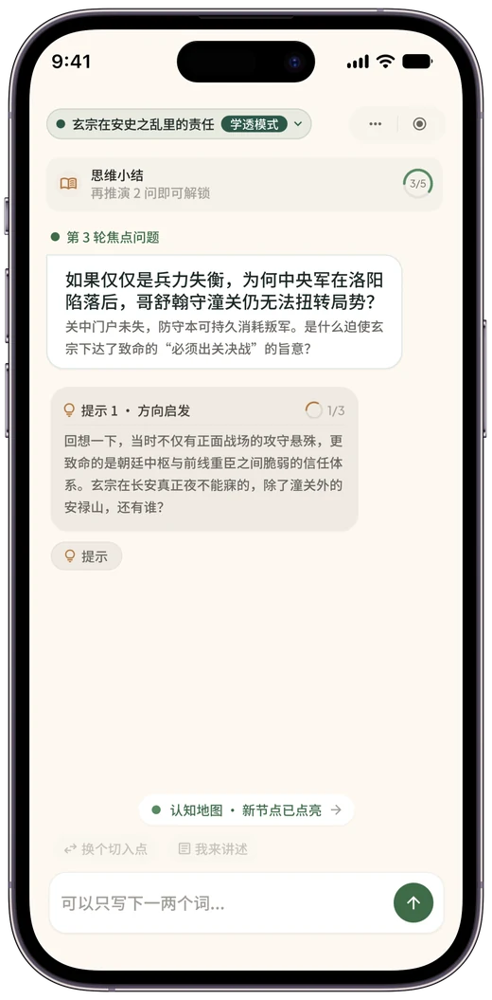
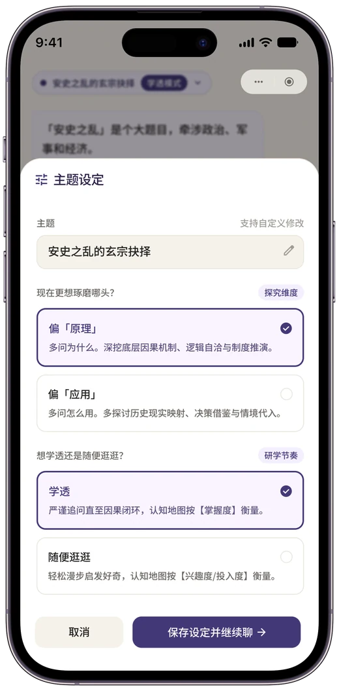

01
点一句读不懂的话，就地把它讲成白话
读难书，最难的不是查不到，是每查一次都要离开这一页。Gloss 把「选中 → 切出去 → 搜索 → 对照 → 切回来」压成一次点击：点句子，就地撑开一句白话，不打断阅读。
236条真实批注
5次 PRD 迭代
20句分层评测集
两个项目的代码都由 AI 编程助手实现，我负责定义问题、拆解任务、设计规则、验收结果。
读难书，最难的不是查不到，是每查一次都要离开这一页。Gloss 把「选中 → 切出去 → 搜索 → 对照 → 切回来」压成一次点击：点句子，就地撑开一句白话，不打断阅读。
书架页 12 本书脊竖排，末位留一个虚线位的「导入新书」；阅读页把目录、正文、阅读参数分进三栏，左栏是书的结构，右栏是读书的参数，中间才是书本身。
Gloss 是网页产品，所以用桌面窗口装；费曼是手机 App，用手机框装 —— 壳的形态本身就是信息。


备考时能记住，却无法验证自己是不是真的理解、内化了——问题出在「只有输入、没有反馈」。费曼把方向反过来：用户复述，AI 只负责追问，思考空间留给你自己。
读完整案例 →它先抛给你一个焦点问题，答不上来时给的不是答案，是三级台阶。方向不对就打开主题设定，把「偏原理还是偏应用」「学透还是随便逛」重新定一遍；掌握程度最后落成一张色块地图，最浅的那块下面，就是下一轮追问的入口。



哲学专业，不写代码，
但能 0 到 1 交付产品。
武汉大学哲学本科，2026 届。两个 AI 产品的代码都由 AI 编程助手实现——我负责的是定义问题、拆解任务、设计规则、验收结果。
我不会写代码，这一点我写在简历第一行而不是藏起来。但两个项目的交付物是真实的：一个已上线的产品，一份 5 个版本的 PRD，一套跑了 236 条真实批注的评测集。
我把问题定义清楚、把标准写成可执行的规则、把任务拆到 AI 能接手的粒度，然后逐项验收。这套方式我跑了两遍，第二遍的产品上线了。
中文哲学书点句出白话的阅读工具，已有 MVP 版本。我负责问题定义、PRD 迭代、改写规则设计、评测集构建与验收。
AI 学习工具，未上线。负责产品定位、语气规范设计与开发验收。
负责 FamCal（家庭成员共享日程）的附件能力：从需求分析、竞品研究、PRD、交互方案到开发跟进与上线验收。这段经历是后面两个独立项目的方法基础。
负责留学项目的小红书内容种草与线索获取，围绕目标用户决策链路设计内容策略，累计产出 100+ 篇内容，参与内容到咨询线索的转化链路复盘。
负责问卷设计，回收 200+ 份有效样本，完成数据清洗与结构化分析，识别出实用价值、图文美化、排版清晰度三大收藏驱动因素，沉淀为小组可复用的选题评估框架。
独立负责日常运营、内容编辑与排版发布，累计发布 97 篇；沉淀标准化推文模板与发布 SOP，出稿时长从 50 分钟降到 20 分钟。
| 教育 | 武汉大学（985）｜ 哲学 本科 ｜ GPA 3.59 ｜ 2022.09 — 2026.06 |
| 主修课程 | 逻辑学、伦理学、普通心理学、社会哲学 |
| AI 工具 | Claude Code、Codex；Prompt 设计与 AI 工作流搭建 |
| 设计工具 | Figma、Google Stitch |
| 数据工具 | Excel（VLOOKUP、数据透视表）、SQL |
| 语言能力 | CET-6 ｜ 粤语 |